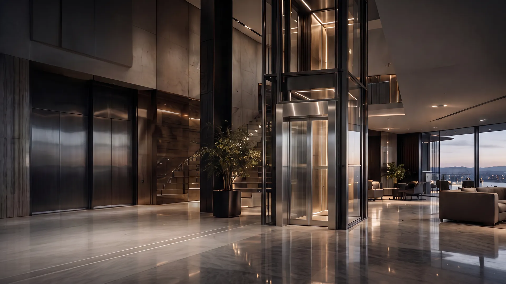
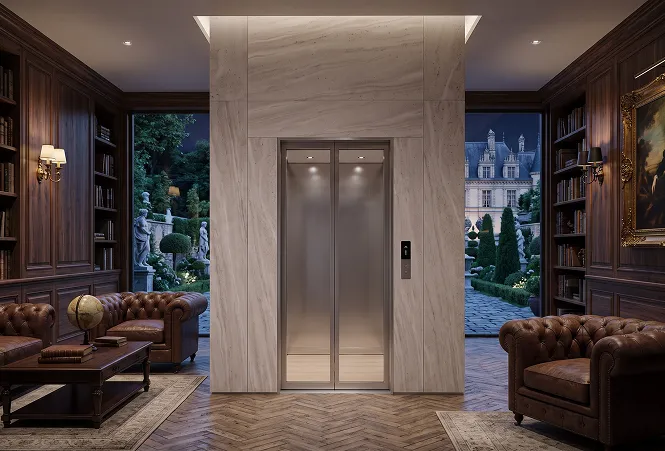
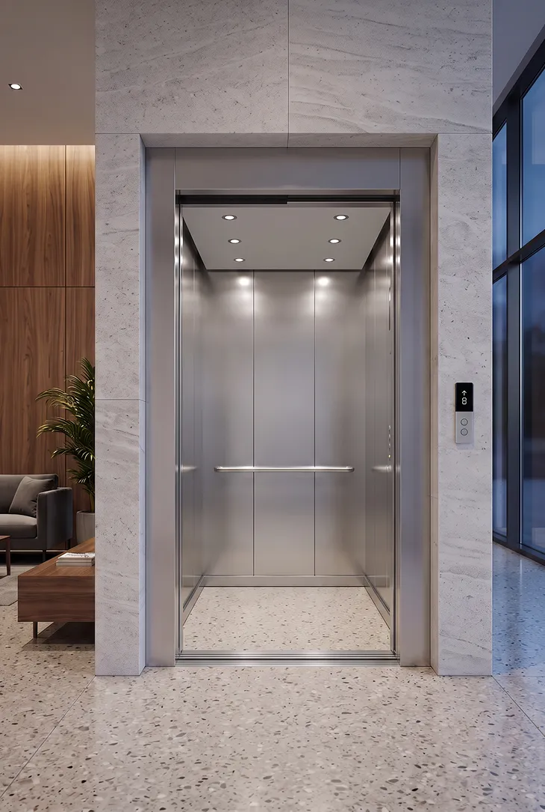

Available space
Evaluate shaft dimensions, pit depth, overhead clearance and structural feasibility.

Teknix Elevators offers elevator solutions for residential and commercial applications.
Mumbai’s residential and commercial properties range from high-rise apartment towers to redevelopment projects, independent homes, hospitals and corporate offices. Each building has different elevator requirements based on height, passenger traffic, available installation space and operating conditions.
Teknix Elevators offers elevator solutions for residential and commercial applications. Whether you are planning a new development, considering a home lift or assessing an existing elevator, choosing the right configuration starts with understanding the building’s technical requirements and intended use.
Selecting an elevator company requires a careful assessment of the proposed equipment, installation process and long-term service requirements. For new and existing buildings, consider the following factors:
Evaluate shaft dimensions, pit depth, overhead clearance and structural feasibility.
Determine the number of floors, travel distance and suitable elevator configuration.
Assess occupancy, peak-hour demand and required passenger capacity.
Confirm applicable regulations, safety provisions and commissioning documentation.
Coordinate elevator requirements with architectural, structural and electrical work.
Review warranty conditions, maintenance coverage and breakdown procedures.

Elevator installation requires coordination between the property owner, architect, structural consultant, electrical contractor and installation team. Existing buildings may need additional feasibility checks before a new lift can be accommodated.
The process generally includes a site inspection, technical specification, coordination of civil and electrical provisions, installation, required testing and final handover.
For redevelopment and existing-building projects, establish the structural feasibility, installation scope, approval requirements and project schedule before work begins. The actual timeline depends on site conditions and the agreed scope of work.
Preventive maintenance helps identify wear, assess safety-related components and support reliable elevator operation. A suitable maintenance plan should reflect manufacturer recommendations, applicable requirements, elevator usage and the service agreement.
When reviewing lift maintenance options, check the inspection schedule, door-system servicing, fault-reporting procedure, spare-parts coverage and warranty terms.
Modernization may be appropriate when an elevator has outdated controls, recurring breakdowns, deteriorating ride quality or components that require replacement.
Depending on the technical assessment, possible upgrades include control systems, door operators, selected drive components, cabin interiors and lighting. A professional inspection should determine whether modernization is appropriate or a complete replacement is more suitable.
Choosing an elevator partner involves evaluating the equipment and the support available throughout its service life. When considering Teknix Elevators, review the proposed model, technical specifications, installation requirements, warranty conditions and maintenance arrangements.
The Villa Matek, Vertix, Greentek and Optima models should be assessed according to their confirmed specifications and intended applications. Request product documentation and a project-specific proposal to compare suitable options.

Planning an elevator for a residential tower, independent home, office or commercial building? Contact Teknix Elevators to discuss your project requirements and explore available product options.
Enquire with Teknix Elevators for a project-specific elevator proposal in Mumbai.
3354, KR Road, Tata Silk Farm,